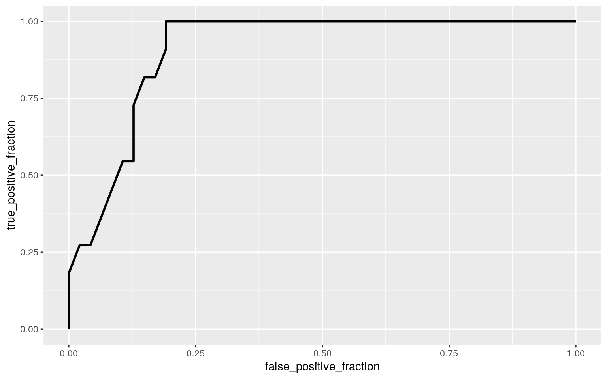

January 1, 0001
##John John jcj2593
Modeling
Instructions
A knitted R Markdown document (preferably HTML) and the raw R Markdown file (as .Rmd) should both be submitted to Canvas by 11:59pm on the due date. These two documents will be graded jointly, so they must be consistent (i.e., don’t change the R Markdown file without also updating the knitted document). In the .Rmd file for Project 2, you can copy the first code-chunk into your project .Rmd file to get better formatting. Notice that you can adjust the opts_chunk$set(…) above to set certain parameters if necessary to make the knitting cleaner (you can globally set the size of all plots, etc). You can copy the set-up chunk in Project2.Rmd: I have gone ahead and set a few for you (such as disabling warnings and package-loading messges when knitting)!
Like before, I envision your written text forming something of a narrative structure around your code/output. All results presented must have corresponding code. Any answers/results/plots etc. given without the corresponding R code that generated the result will not be graded. Furthermore, all code contained in our project document should work properly. Please do not include any extraneous code or code which produces error messages. (Code which produces warnings is fine as long as you understand what the warnings mean.)
Find data:
Find one dataset with at least 5 variables (ideally more!) that you want to use to build models/test hypotheses. At least one should be categorical (with 2-5 groups, ideally; definitely fewer than 10) and at least two should be numeric (taking on more than 10 distinct values). Ideally, at least of your variables will be binary (if not, you will have to create one by discretizing a numeric or collapsing levels of a categorical). You will need a minimum of 40 observations (at least 10 observations for every explanatory variable you have, ideally 20+ observations/variable).
It is perfectly fine to use either dataset (or the merged dataset, or a subset of your variables) from Project 1. However, I might encourage you to diversify things a bit and choose a different dataset to work with (particularly if the variables did not reveal interesting associations in Project 1 that you want to follow up with). The only requirement/restriction is that you may not use data from any examples we have done in class or lab. It would be a good idea to pick more cohesive data this time around (i.e., variables that you actually thing might have a relationship you would want to test). Think more along the lines of your Biostats project.
Again, you can use data from anywhere you want (see bottom for resources)! If you want a quick way to see whether a built-in (R) dataset has binary and/or character (i.e., categorical) variables, check out this list: https://vincentarelbundock.github.io/Rdatasets/datasets.html.
Guidelines and Rubric
- 0. (5 pts) Introduce your dataset and each of your variables (or just your main variables if you have lots) in a paragraph. What are they measuring? How many observations?
cancer <- read.csv("Cancer_Cost_Dataset.csv")
head(cancer)## Cancer.Site Year Sex Age
Incidence.and.Survival.Assumptions
## 1 AllSites 2010 Both sexes All ages Incidence, Survival
at constant rate
## 2 AllSites 2010 Both sexes All ages Incidence follows
recent trend, Survival constant
## 3 AllSites 2010 Both sexes All ages Survival follows
recent trend, Incidence constant
## 4 AllSites 2010 Both sexes All ages Incidence, Survival
follow recent trends
## 5 AllSites 2010 Both sexes All ages Incidence, Survival
follow recent trends
## 6 AllSites 2010 Both sexes All ages Incidence, Survival
follow recent trends
##
Annual.Cost.Increase..applied.to.initial.and.last.phases.
Total.Costs
## 1 0% 124565.6
## 2 0% 122420.8
## 3 0% 125397.7
## 4 0% 123236.3
## 5 2% 123236.3
## 6 5% 123236.3
## Initial.Year.After.Diagnosis.Cost Continuing.Phase.Cost
Last.Year.of.Life.Cost
## 1 40463.5 46642.8 37459.2
## 2 38552.7 46671.9 37196.3
## 3 40463.5 47136.3 37797.9
## 4 38552.7 47155.7 37527.8
## 5 38552.7 47155.7 37527.8
## 6 38552.7 47155.7 37527.8cancer <- cancer %>% rename(Annual.Cost.Increase = Annual.Cost.Increase..applied.to.initial.and.last.phases.)The dataset I chose focuses on the costs of cancer treatment by cancer site (i.e. all sites, brain, bladder, etc.) from 2010-2020. Additionally, the dataset looks at cancers that affect both sexes (Colorectal, brain), just females (breast, cervix), and just males (prostate). The costs of treatment is seperated into different variables - the total costs of treatment, the costs following the intial year after being diagnosed, continued treatment costs, and the cost of treatment at the end of life. Furthermore, the dataset looks at the annual change in the cost of treatment (by %) from the intial to the final phase of cancer treatment. There are approximatley 1,254 observations. Their is only one varibale for age (All ages) and the ‘Incidence.and.Survival.Assumptions’ looks at different assumptive trends in incidence/survival diagnosis
- 1. (15 pts) Perform a MANOVA testing whether any of your numeric variables (or a subset of them, if including them all is unreasonable or doesn’t make sense) show a mean difference across levels of one of your categorical variables (3). If they do, perform univariate ANOVAs to find response(s) showing a mean difference across groups (3), and perform post-hoc t tests to find which groups differ (3). Discuss the number of tests you have performed, calculate the probability of at least one type I error (if unadjusted), and adjust the significance level accordingly (bonferroni correction) before discussing significant differences (3). Briefly discuss some of the MANOVA assumptions and whether or not they are likely to have been met here (no need for anything too in-depth) (2).
mano <- manova(cbind(Total.Costs, Initial.Year.After.Diagnosis.Cost, Continuing.Phase.Cost, Last.Year.of.Life.Cost)~Sex, data=cancer)
summary(mano, tol = 0)## Df Pillai approx F num Df den Df Pr(>F)
## Sex 2 0.50412 105.23 8 2498 < 2.2e-16 ***
## Residuals 1251
## ---
## Signif. codes: 0 '***' 0.001 '**' 0.01 '*' 0.05 '.' 0.1
' ' 1summary.aov(mano)## Response Total.Costs :
## Df Sum Sq Mean Sq F value Pr(>F)
## Sex 2 1.1423e+10 5711545943 5.8042 0.003097 **
## Residuals 1251 1.2310e+12 984042943
## ---
## Signif. codes: 0 '***' 0.001 '**' 0.01 '*' 0.05 '.' 0.1
' ' 1
##
## Response Initial.Year.After.Diagnosis.Cost :
## Df Sum Sq Mean Sq F value Pr(>F)
## Sex 2 9.5126e+08 475630297 5.0846 0.00632 **
## Residuals 1251 1.1702e+11 93543349
## ---
## Signif. codes: 0 '***' 0.001 '**' 0.01 '*' 0.05 '.' 0.1
' ' 1
##
## Response Continuing.Phase.Cost :
## Df Sum Sq Mean Sq F value Pr(>F)
## Sex 2 1.5677e+09 783850365 5.3961 0.00464 **
## Residuals 1251 1.8172e+11 145262452
## ---
## Signif. codes: 0 '***' 0.001 '**' 0.01 '*' 0.05 '.' 0.1
' ' 1
##
## Response Last.Year.of.Life.Cost :
## Df Sum Sq Mean Sq F value Pr(>F)
## Sex 2 2.3374e+09 1168724803 12.061 6.483e-06 ***
## Residuals 1251 1.2122e+11 96899686
## ---
## Signif. codes: 0 '***' 0.001 '**' 0.01 '*' 0.05 '.' 0.1
' ' 1pairwise.t.test(cancer$Total.Costs, cancer$Sex, p.adj = "none")##
## Pairwise comparisons using t tests with pooled SD
##
## data: cancer$Total.Costs and cancer$Sex
##
## Both sexes Females
## Females 0.00072 -
## Males 0.49964 0.21031
##
## P value adjustment method: nonepairwise.t.test(cancer$Initial.Year.After.Diagnosis.Cost, cancer$Sex, p.adj = "none")##
## Pairwise comparisons using t tests with pooled SD
##
## data: cancer$Initial.Year.After.Diagnosis.Cost and
cancer$Sex
##
## Both sexes Females
## Females 0.0018 -
## Males 0.7919 0.0511
##
## P value adjustment method: nonepairwise.t.test(cancer$Continuing.Phase.Cost, cancer$Sex, p.adj = "none")##
## Pairwise comparisons using t tests with pooled SD
##
## data: cancer$Continuing.Phase.Cost and cancer$Sex
##
## Both sexes Females
## Females 0.002 -
## Males 0.450 0.018
##
## P value adjustment method: nonepairwise.t.test(cancer$Last.Year.of.Life.Cost, cancer$Sex, p.adj = "none")##
## Pairwise comparisons using t tests with pooled SD
##
## data: cancer$Last.Year.of.Life.Cost and cancer$Sex
##
## Both sexes Females
## Females 9.1e-05 -
## Males 0.00088 0.40520
##
## P value adjustment method: none1-(.95^9) #chance of Type I error## [1] 0.3697506.05/9 #bonferroni correction## [1] 0.005555556A total of 9 tests were performed on the Cancer data set - 1 MANOVA tests, 4 univariate ANOVA tests, and 4 post-hoc pairwise t-tests. In the MANOVA test, I wanted to observe the mean differences for the 4 response variables (Total Cost, Initial Year After Diagnosis Cost, Continuing Phase Cost, and Last Year of Life Cost) when comparing it to the categorical explanatory variable of sex (Male, Female, All Sexes). The results showed that there were mean differences in cost for all of the response variables across gender (p < 2.2e-16). When looking at the 4 univariant ANOVA all of the repsonse variables were significant, meaning that at least one sex differed. Furthermore, because 9 tests were performed the probability of making a Type I error was approximatley 0.369.
Because there was a total of 9 tests performed, the bonferroni correction meant ?? = 0.0056. Taking this correction into account, none of the response variables differed between males and females. This is a little surprising because I expected that differing costs of treatment for certain cancers might be different between males and females. However, when comparing female cancers to both sexes cancer there was a significant different for all response variables. Males only significantly differed from both sexes cancers in last of year life costs, and was not significantly different for the other 3 repsonse variables. When looking at the MANOVA assumptions I believe that the no multicollinearity assumption was not fully met - because total cost of treatment was dependednt on the other cost variables.Furthermore, not all of the groups have the same variance because cancer costs differs by treatments and how long it takes to treat. However, after giving a cursory glance of the dataset there did not appear to be any extreme outliers. The dataset may have been independently sampled from a large group, but this cannot be proven.
- 2. (10 pts) Perform some kind of randomization test on your data (that makes sense). The statistic can be anything you want (mean difference, correlation, F-statistic/ANOVA, chi-squared), etc. State null and alternative hypotheses, perform the test, and interpret the results (7). Create a plot visualizing the null distribution and the test statistic (3).
cancer2 <- cancer%>% filter(Cancer.Site == c("Prostate", "Breast"))
head(cancer2)## Cancer.Site Year Sex Age
Incidence.and.Survival.Assumptions
## 1 Breast 2010 Females All ages Incidence follows recent
trend, Survival constant
## 2 Breast 2010 Females All ages Incidence, Survival
follow recent trends
## 3 Breast 2010 Females All ages Incidence, Survival
follow recent trends
## 4 Prostate 2010 Males All ages Incidence, Survival at
constant rate
## 5 Prostate 2010 Males All ages Survival follows recent
trend, Incidence constant
## 6 Prostate 2010 Males All ages Incidence, Survival
follow recent trends
## Annual.Cost.Increase Total.Costs
Initial.Year.After.Diagnosis.Cost Continuing.Phase.Cost
## 1 0% 15920.9 5634.7 6639.5
## 2 0% 15932.6 5634.7 6646.9
## 3 5% 15932.6 5634.7 6646.9
## 4 0% 11848.1 4547.3 6187.8
## 5 0% 11854.1 4547.3 6193.0
## 6 2% 11672.9 4393.4 6169.5
## Last.Year.of.Life.Cost
## 1 3646.6
## 2 3651.0
## 3 3651.0
## 4 1113.0
## 5 1113.7
## 6 1109.9ggplot(cancer2,aes(Total.Costs,fill=Cancer.Site))+geom_histogram(bins=10)+facet_wrap(~Cancer.Site,ncol=2)+theme(legend.position="none")cancer2%>%group_by(Cancer.Site)%>%
summarize(means=mean(Total.Costs))%>%summarize(`mean_diff`=diff(means))## # A tibble: 1 x 1
## mean_diff
## <dbl>
## 1 -4492.rand_dist<-vector()
for(i in 1:5000){
new<-data.frame(total=sample(cancer2$Total.Costs),Cancer.Site=cancer2$Cancer.Site)
rand_dist[i]<-mean(new[new$Cancer.Site=="Prostate",]$total)-
mean(new[new$Cancer.Site=="Breast",]$total)}
mean(rand_dist>4491.758 | rand_dist < -4491.758)## [1] 0{hist(rand_dist,main="",ylab=""); abline(v = c(4491.758, -4491.758),col="red")}t.test(data=cancer2,Total.Costs~Cancer.Site)##
## Welch Two Sample t-test
##
## data: Total.Costs by Cancer.Site
## t = 9.0177, df = 53.5, p-value = 2.53e-12
## alternative hypothesis: true difference in means is not
equal to 0
## 95 percent confidence interval:
## 3492.908 5490.607
## sample estimates:
## mean in group Breast mean in group Prostate
## 18484.85 13993.09I chose to look at the mean difference in total costs between Prostate Cancer (which is only ‘Males’ in this dataset) and Breast Cancer (which is only ‘Females’ in this dataset). The null hypothesis states that the mean total costs of treatment is the same for Prostate cancer vs. Breast cancer. The alternative hypothesis states that the mean total costs of treatment is different for Prostate cancer vs. Breast cancer. After performing the randomization test I got a p value of exactly 0 when seeing if the mean difference of +/-4491.758 was found in the random distribution (rand_dist) , meaning that we can outright reject the null hypothesis that the mean total costs of the two treatments is the same. Furthermore, when confirming the results with an independent samples t-test, the results showed that there was still a significant difference in mean total costs between Prostate cancer vs. Breast Cancer.
3. (40 pts) Build a linear regression model predicting one of your response variables from at least 2 other variables, including their interaction. Mean-center any numeric variables involved in the interaction.
- Interpret the coefficient estimates (do not discuss significance) (10)
- Plot the regression using
ggplot()using geom_smooth(method=“lm”). If your interaction is numeric by numeric, refer to code in the slides to make the plot or check out theinteractionspackage, which makes this easier. If you have 3 or more predictors, just chose two of them to plot for convenience. (10) - What proportion of the variation in the outcome does your model explain? (4)
- Check assumptions of linearity, normality, and homoskedasticity either graphically or using a hypothesis test (5)
- Regardless, recompute regression results with robust standard errors via
coeftest(..., vcov=vcovHC(...)). Discuss significance of results, including any changes from before/after robust SEs if applicable. (10)
cancer3<- cancer %>% filter(Cancer.Site == c("Colorectal", "Pancreas", "Esophagus", "Stomach")) %>% filter(Incidence.and.Survival.Assumptions == "Incidence, Survival follow recent trends") %>% mutate(Initial_c = Initial.Year.After.Diagnosis.Cost - mean(Initial.Year.After.Diagnosis.Cost))
head(cancer3)## Cancer.Site Year Sex Age
Incidence.and.Survival.Assumptions
## 1 Pancreas 2010 Both sexes All ages Incidence, Survival
follow recent trends
## 2 Stomach 2010 Both sexes All ages Incidence, Survival
follow recent trends
## 3 Colorectal 2011 Both sexes All ages Incidence,
Survival follow recent trends
## 4 Esophagus 2011 Both sexes All ages Incidence, Survival
follow recent trends
## 5 Pancreas 2011 Both sexes All ages Incidence, Survival
follow recent trends
## 6 Stomach 2011 Both sexes All ages Incidence, Survival
follow recent trends
## Annual.Cost.Increase Total.Costs
Initial.Year.After.Diagnosis.Cost Continuing.Phase.Cost
## 1 5% 2302.3 1428.3 109.5
## 2 0% 1715.3 746.5 229.9
## 3 2% 13633.0 5400.9 3919.2
## 4 2% 1434.4 591.1 163.5
## 5 0% 2377.2 1454.8 119.4
## 6 5% 1803.2 784.6 234.4
## Last.Year.of.Life.Cost Initial_c
## 1 764.5 -529.2125
## 2 738.9 -1211.0125
## 3 4312.9 3443.3875
## 4 679.8 -1366.4125
## 5 803.0 -502.7125
## 6 784.3 -1172.9125fit1<- lm(Last.Year.of.Life.Cost ~ Cancer.Site+Initial_c, data=cancer3)
summary(fit1)##
## Call:
## lm(formula = Last.Year.of.Life.Cost ~ Cancer.Site +
Initial_c,
## data = cancer3)
##
## Residuals:
## Min 1Q Median 3Q Max
## -130.72 -47.26 -10.69 47.04 153.28
##
## Coefficients:
## Estimate Std. Error t value Pr(>|t|)
## (Intercept) 1426.03805 161.31106 8.840 1.86e-09 ***
## Cancer.SiteEsophagus 546.42208 213.24855 2.562 0.0163 *
## Cancer.SitePancreas -186.82461 167.52900 -1.115 0.2746
## Cancer.SiteStomach 410.37662 205.77339 1.994 0.0563 .
## Initial_c 0.85036 0.03985 21.342 < 2e-16 ***
## ---
## Signif. codes: 0 '***' 0.001 '**' 0.01 '*' 0.05 '.' 0.1
' ' 1
##
## Residual standard error: 69.01 on 27 degrees of freedom
## Multiple R-squared: 0.998, Adjusted R-squared: 0.9977
## F-statistic: 3352 on 4 and 27 DF, p-value: < 2.2e-16fit2<-lm(Last.Year.of.Life.Cost ~ Cancer.Site*Initial_c, data=cancer3)
summary(fit2)##
## Call:
## lm(formula = Last.Year.of.Life.Cost ~ Cancer.Site *
Initial_c,
## data = cancer3)
##
## Residuals:
## Min 1Q Median 3Q Max
## -56.504 -23.389 -2.712 9.866 122.462
##
## Coefficients:
## Estimate Std. Error t value Pr(>|t|)
## (Intercept) 1075.53745 204.31671 5.264 2.13e-05 ***
## Cancer.SiteEsophagus 2618.09357 398.78044 6.565 8.63e-07
***
## Cancer.SitePancreas 153.76122 204.79709 0.751 0.460073
## Cancer.SiteStomach 1017.86785 229.44803 4.436 0.000174
***
## Initial_c 0.93856 0.05117 18.341 1.27e-15 ***
## Cancer.SiteEsophagus:Initial_c 1.27243 0.27507 4.626
0.000108 ***
## Cancer.SitePancreas:Initial_c -0.16705 0.06016 -2.777
0.010476 *
## Cancer.SiteStomach:Initial_c 0.14426 0.10673 1.352
0.189073
## ---
## Signif. codes: 0 '***' 0.001 '**' 0.01 '*' 0.05 '.' 0.1
' ' 1
##
## Residual standard error: 44.59 on 24 degrees of freedom
## Multiple R-squared: 0.9993, Adjusted R-squared: 0.999
## F-statistic: 4595 on 7 and 24 DF, p-value: < 2.2e-16ggplot(fit2,aes(x=Initial_c,y=Last.Year.of.Life.Cost,color=Cancer.Site))+geom_point()+geom_smooth(method='lm', se=F) #regression plotlibrary(effects)
plot(effect(term = "Cancer.Site:Initial_c", mod = fit2, default.levels =20), multiline = "TRUE") #regression plot with interactionsresids<-lm(Last.Year.of.Life.Cost ~ Cancer.Site*Initial_c, data=cancer3)$residuals
fitted<-lm(Last.Year.of.Life.Cost ~ Cancer.Site*Initial_c, data=cancer3)$fitted.values
resids<-fit2$residuals
fitvalues<-fit2$fitted.values
ggplot()+geom_point(aes(fitvalues,resids))+geom_hline(yintercept=0, color='red')shapiro.test(resids)##
## Shapiro-Wilk normality test
##
## data: resids
## W = 0.91476, p-value = 0.01503library(lmtest)
bptest(fit2)##
## studentized Breusch-Pagan test
##
## data: fit2
## BP = 8.7633, df = 7, p-value = 0.2701library(sandwich)
coeftest(fit1, vcov = vcovHC(fit1))[,1:2]## Estimate Std. Error
## (Intercept) 1426.0380473 182.10441875
## Cancer.SiteEsophagus 546.4220761 248.35734536
## Cancer.SitePancreas -186.8246135 194.05174416
## Cancer.SiteStomach 410.3766232 235.44452800
## Initial_c 0.8503585 0.04624403coeftest(fit2, vcov = vcovHC(fit2))[,1:4]## Estimate Std. Error t value Pr(>|t|)
## (Intercept) 1075.5374457 69.60483869 15.452050
5.677455e-14
## Cancer.SiteEsophagus 2618.0935654 148.81467117 17.592980
3.216805e-15
## Cancer.SitePancreas 153.7612213 71.88565046 2.138970
4.281750e-02
## Cancer.SiteStomach 1017.8678472 109.84200543 9.266654
2.129195e-09
## Initial_c 0.9385643 0.01808631 51.893637 3.652967e-26
## Cancer.SiteEsophagus:Initial_c 1.2724332 0.10466544
12.157148 9.542967e-12
## Cancer.SitePancreas:Initial_c -0.1670516 0.03561436
-4.690569 9.120652e-05
## Cancer.SiteStomach:Initial_c 0.1442647 0.08117059
1.777303 8.819533e-02summary(fit2)##
## Call:
## lm(formula = Last.Year.of.Life.Cost ~ Cancer.Site *
Initial_c,
## data = cancer3)
##
## Residuals:
## Min 1Q Median 3Q Max
## -56.504 -23.389 -2.712 9.866 122.462
##
## Coefficients:
## Estimate Std. Error t value Pr(>|t|)
## (Intercept) 1075.53745 204.31671 5.264 2.13e-05 ***
## Cancer.SiteEsophagus 2618.09357 398.78044 6.565 8.63e-07
***
## Cancer.SitePancreas 153.76122 204.79709 0.751 0.460073
## Cancer.SiteStomach 1017.86785 229.44803 4.436 0.000174
***
## Initial_c 0.93856 0.05117 18.341 1.27e-15 ***
## Cancer.SiteEsophagus:Initial_c 1.27243 0.27507 4.626
0.000108 ***
## Cancer.SitePancreas:Initial_c -0.16705 0.06016 -2.777
0.010476 *
## Cancer.SiteStomach:Initial_c 0.14426 0.10673 1.352
0.189073
## ---
## Signif. codes: 0 '***' 0.001 '**' 0.01 '*' 0.05 '.' 0.1
' ' 1
##
## Residual standard error: 44.59 on 24 degrees of freedom
## Multiple R-squared: 0.9993, Adjusted R-squared: 0.999
## F-statistic: 4595 on 7 and 24 DF, p-value: < 2.2e-16In my new data I wanted to look at the 4 digestive system cancers given in the dataset (Colorectal, Stomach, Esophagus, and Pancreatic). Furthermore, I only wanted to focus on the ‘Initial Year after diagnosis’ costs and the ‘Last year of life’ costs for these 4 cancers based on when Survival and Incidence followed recent trends (under the ‘Incidence.and.Survival.Assumptions’ column). For my interaction, I wanted to see the effect of the interaction that Cancer.Site and Initial_c (mean centered Initial Year after diagnosis costs) had on the Last the last year of life cost.
When analyzing the interactions, the intercept of 1075.54 is the predicted Last year of life costs for Colorectal cancer patients with an average Initial year after diagnosis cost. Esophageal cancer patients with average Initial cost have a predicted Final cost that is 2618.1 greater than colorectal cancer patients with average intial cost. Pancreatic cancer patients with average Initial cost have a predicted Final cost that is 153.76 greater than colorectal cancer patients with average intial cost. Stomach cancer patients with average Initial cost have a predicted Final cost that is 1017.87 greater than colorectal cancer patients with average intial cost. For every 1 unit increase in Initial_c, the predicted final cost goes up 0.939 for colorectal cancer patients. Slope of Initial_c on Final cost for esophageal caancer patients is 1.27 greater than colorectal cancer patients. Slope of Initial_c on Pancreatic cancer patients is -0.17 less than for colorectal cancer patients. Slope of Initial_c on stomach cancer patients is 0.144 greater that for colorectal cancer patients.
According to the cancer3 model, 99% of variability in Last year of life cost is explained by these variables (good cause we only want to focus on these variables) and the adjusted R squared is still 0.99.When analyzing the corrected standard errors, all of the standard errors were much lower than the standard fit2 model. After correcting the standard errors, Cancer.SitePancreas and Cancer.SiteStomach:Initial_c became significant, as they werent in the orignal fitted interaction model.
- 4. (5 pts) Rerun same regression model (with the interaction), but this time compute bootstrapped standard errors (either by resampling observations or residuals). Discuss any changes you observe in SEs and p-values using these SEs compared to the original SEs and the robust SEs)
fit2<-lm(Last.Year.of.Life.Cost ~ Cancer.Site*Initial_c, data=cancer3)
resids<-fit2$residuals
fitted<-fit2$fitted.values
resid_resamp<-replicate(5000,{
new_resids<-sample(resids,replace=TRUE)
cancer3$new_y<-fitted+new_resids
fit<-lm(new_y~Cancer.Site*Initial_c,data=cancer3)
coef(fit)
})
resid_resamp%>%t%>%as.data.frame%>%summarize_all(sd)## (Intercept) Cancer.SiteEsophagus Cancer.SitePancreas
Cancer.SiteStomach Initial_c
## 1 179.1796 343.0501 179.6475 200.9461 0.04494137
## Cancer.SiteEsophagus:Initial_c
Cancer.SitePancreas:Initial_c Cancer.SiteStomach:Initial_c
## 1 0.2363828 0.05292127 0.09216478The computed bootstrapped SE’s for the linear regression interaction model were all larger than the the robust SE but were all smaller than the orignal SE. The orignal SE was lower than the bootstrapped SE - for example the original SE for the intercept was 204.31 and the bootstrapped SE 176.95. The robust SE was smaller than both the bootstrapped SE and the original SE. For example the Cancer.SiteEsophagus bootstrapped SE was 350.618, 398.78044 for the original SE, and 148.81 for the robust SE. These are very large differences, signaling that the more conservative SE estimates from the bootstrapped SE and original SE are more reliable SE estimates.
5. (30 pts) Fit a logistic regression model predicting a binary variable (if you don’t have one, make/get one) from at least two explanatory variables (interaction not necessary).
- Interpret coefficient estimates in context (10)
- Report a confusion matrix for your logistic regression (5)
- Compute and discuss the Accuracy, Sensitivity (TPR), Specificity (TNR), Precision (PPV), and AUC of your model (5)
- Using ggplot, make a density plot of the log-odds (logit) colored/grouped by your binary outcome variable (5)
- Generate an ROC curve (plot) and calculate AUC (either manually or with a package); interpret (5)
cancer2<-cancer %>% filter(Cancer.Site ==c("Cervix", "Esophagus", "Stomach", "Pancrease", "Melanoma", "Uterus", "Cervix")) %>% group_by(Cancer.Site) %>% mutate(y=ifelse(Total.Costs <=1400, 1,0))
head(cancer2)## # A tibble: 6 x 11
## # Groups: Cancer.Site [5]
## Cancer.Site Year Sex Age Incidence.and.S…
Annual.Cost.Inc… Total.Costs Initial.Year.Af…
## <fct> <int> <fct> <fct> <fct> <fct> <dbl> <dbl>
## 1 Cervix 2010 Fema… All … Incidence, Surv… 0% 1394. 386
## 2 Cervix 2010 Fema… All … Incidence, Surv… 2% 1394. 386
## 3 Esophagus 2010 Both… All … Incidence, Surv… 0% 1333.
578.
## 4 Melanoma 2010 Both… All … Survival follow… 0% 2365.
490.
## 5 Stomach 2010 Both… All … Incidence, Surv… 2% 1715.
746.
## 6 Uterus 2010 Both… All … Incidence follo… 0% 2544.
1001.
## # … with 3 more variables: Continuing.Phase.Cost <dbl>,
Last.Year.of.Life.Cost <dbl>, y <dbl>fit3<- glm(y~Cancer.Site+ Year, family = "binomial"(link ="logit"), data = cancer2)
coeftest(fit3)##
## z test of coefficients:
##
## Estimate Std. Error z value Pr(>|z|)
## (Intercept) 325.86818 280.26252 1.1627 0.24494
## Cancer.SiteEsophagus -2.38825 1.18054 -2.0230 0.04307 *
## Cancer.SiteMelanoma -20.75972 5494.49431 -0.0038 0.99699
## Cancer.SiteStomach -20.77358 5497.10636 -0.0038 0.99698
## Cancer.SiteUterus -20.72823 5807.59041 -0.0036 0.99715
## Year -0.16167 0.13909 -1.1624 0.24508
## ---
## Signif. codes: 0 '***' 0.001 '**' 0.01 '*' 0.05 '.' 0.1
' ' 1coef(fit3)%>%exp%>%round(1)%>%data.frame## .
## (Intercept) 3.332364e+141
## Cancer.SiteEsophagus 1.000000e-01
## Cancer.SiteMelanoma 0.000000e+00
## Cancer.SiteStomach 0.000000e+00
## Cancer.SiteUterus 0.000000e+00
## Year 9.000000e-01probability<-predict(fit3,type="response")
table(predict=as.numeric(probability>.5),truth=cancer2$y)%>%addmargins## truth
## predict 0 1 Sum
## 0 42 5 47
## 1 5 6 11
## Sum 47 11 58(42+6)/58 #Accuracy## [1] 0.82758626/11 # Specificity## [1] 0.545454542/47 #Sensitivity## [1] 0.89361742/47 #Precision## [1] 0.893617cancer2$logit <-predict(fit3,type="link")
cancer2%>%ggplot(aes(logit,color=y,fill=y))+geom_density(alpha=.4, linetype ="dashed")+geom_vline(xintercept=0)+xlab("logit (log-odds)")+geom_rug(aes(logit,color=y))
library(plotROC)
ROCplot<-ggplot(cancer2)+geom_roc(aes(d=y,m=probability), n.cuts=0)
ROCplot
calc_auc(ROCplot)## PANEL group AUC
## 1 1 -1 0.9090909In my logisitc regression I wanted to predict the Total Cost of <$1400 dollars for cancer treatment (y =1) from the 7 cheapest Cancer.Sites and by Year. After exponentiating the coefficients - Melanoma, Stomach, and Uterus did not change the odds of predicting the Total Cost (odds =0) when holding the Year constant. The intercept(Cervix) massivley predicted the odds of predicting the Total Cost of <1400 - showing that all of the Total Cost values were less than this when controlling for the year. When controlling for year, Esophagus multiplied the odds by a factor of 0.1. Lastly, when controlling for Cancer.Site, going up 1 year multiplied the odds by a factor of 0.9. The model had an accuracy of 0.82, a specificity, of 0.55, a sensitivity of 0.89, and a precision of 0.89 - all very good values for the dataset. Lastly, the model had an AUC of 0.91 which is excellent, signaling that the sensiity and specificity of my model wasd very good.
6. (25 pts) Perform a logistic regression predicting the same binary response variable from ALL of the rest of your variables (the more, the better!)
- Fit model, compute in-sample classification diagnostics (Accuracy, Sensitivity, Specificity, Precision, AUC), and interpret (5)
- Perform 10-fold (or repeated random sub-sampling) CV with the same model and report average out-of-sample classification diagnostics (Accuracy, Sensitivity, Specificity, Precision, and AUC); interpret AUC and compare with the in-sample metrics (10)
- Perform LASSO on the same model/variables. Choose lambda to give the simplest model whose accuracy is near that of the best (i.e.,
lambda.1se). Discuss which variables are retained. (5) - Perform 10-fold CV using only the variables lasso selected: compare model’s out-of-sample AUC to that of your logistic regressions above (5)
library(glmnet)
cancer4<-cancer2 %>% select(-"Age",-"Incidence.and.Survival.Assumptions", -"logit") %>% ungroup(Cancer.Site)
head(cancer4)## # A tibble: 6 x 9
## Cancer.Site Year Sex Annual.Cost.Inc… Total.Costs
Initial.Year.Af… Continuing.Phas…
## <fct> <int> <fct> <fct> <dbl> <dbl> <dbl>
## 1 Cervix 2010 Fema… 0% 1394. 386 356.
## 2 Cervix 2010 Fema… 2% 1394. 386 356.
## 3 Esophagus 2010 Both… 0% 1333. 578. 146.
## 4 Melanoma 2010 Both… 0% 2365. 490. 1544.
## 5 Stomach 2010 Both… 2% 1715. 746. 230.
## 6 Uterus 2010 Both… 0% 2544. 1001. 783.
## # … with 2 more variables: Last.Year.of.Life.Cost <dbl>,
y <dbl>fit4<- glm(y~., data = cancer4, family = "binomial")
probability2<- predict(fit4, type = "response")
class_diag <- function(probs,truth){
tab<-table(factor(probs>.5,levels=c("FALSE","TRUE")),truth)
acc=sum(diag(tab))/sum(tab)
sens=tab[2,2]/colSums(tab)[2]
spec=tab[1,1]/colSums(tab)[1]
ppv=tab[2,2]/rowSums(tab)[2]
f1=2*(sens*ppv)/(sens+ppv)
if(is.numeric(truth)==FALSE & is.logical(truth)==FALSE) truth<-as.numeric(truth)-1
ord<-order(probs, decreasing=TRUE)
probs <- probs[ord]; truth <- truth[ord]
TPR=cumsum(truth)/max(1,sum(truth))
FPR=cumsum(!truth)/max(1,sum(!truth))
dup<-c(probs[-1]>=probs[-length(probs)], FALSE)
TPR<-c(0,TPR[!dup],1); FPR<-c(0,FPR[!dup],1)
n <- length(TPR)
auc<- sum( ((TPR[-1]+TPR[-n])/2) * (FPR[-1]-FPR[-n]) )
data.frame(acc,sens,spec,ppv,f1,auc)
}
class_diag(probability2,cancer4$y)## acc sens spec ppv f1 auc
## 1 1 1 1 1 1 1set.seed(1243)
k=6
data1<-cancer4[sample(nrow(cancer4)),]
folds<-cut(seq(1:nrow(cancer4)),breaks=k,labels=F)
diags<-NULL
for(i in 1:k){
train <- data1[folds!=i,]
test <- data1[folds==i,]
truth <- test$y
fit5 <- glm(y~., data=train, family="binomial")
probs <- predict(fit5, newdata=test, type="response")
diags<-rbind(diags,class_diag(probs,as.factor(truth)))
}
summarize_all(diags, mean)## acc sens spec ppv f1 auc
## 1 0.9166667 0.9166667 0.9236111 0.7222222 0.7777778
0.9334491y<-as.matrix(cancer4$y)
x<-model.matrix(y~.,data=cancer4)[,-1]
x<-scale(x)
cv<-cv.glmnet(x,y,family="binomial")## Error in lognet(x, is.sparse, ix, jx, y, weights, offset, alpha, nobs, : NA/NaN/Inf in foreign function call (arg 5)lasso<-glmnet(x,y,family="binomial",lambda=cv$lambda.1se)## Error in glmnet(x, y, family = "binomial", lambda = cv$lambda.1se): object 'cv' not foundcoef(lasso)## Error in coef(lasso): object 'lasso' not foundcancer5 <- cancer4 %>% mutate(Two = ifelse(Annual.Cost.Increase == "2%", 1, 0)) %>% mutate(Five = ifelse(Annual.Cost.Increase == "5%", 1, 0)) %>% mutate(Cervix = ifelse(Cancer.Site == "Cervix", 1, 0))%>% select(-"Cancer.Site", -"Year", -"Sex", -"Continuing.Phase.Cost", -"Last.Year.of.Life.Cost")
set.seed(1243)
k=6
data2<-cancer5[sample(nrow(cancer5)),]
folds2<-cut(seq(1:nrow(cancer5)),breaks=k,labels=F)
diags<-NULL
for(i in 1:k){
train <- data2[folds2!=i,]
test <- data2[folds2==i,]
truth <- test$y
fit6 <- glm(y~., data=train, family="binomial")
probs <- predict(fit6, newdata=test, type="response")
diags<-rbind(diags,class_diag(probs,as.factor(truth)))
}
summarize_all(diags, mean)## acc sens spec ppv f1 auc
## 1 0.95 0.9166667 0.962963 0.8888889 0.8611111 1When a logisitc regression was run on the full data set, the accruacy, sensitivity, specificity, precsion, and AUC were all one - showing gross signs of overfitting in the model. However, when this logisitic regression model was ran under 6-k fold CV (the most folds without exceeding the subscript boundaries) the model became more reliable - with all of the values being less than the original class_diag model. The accuracy was 0.917 (very good), the sensitivity was 0.917, the specificity was 0.923, the preciscion was 0.722 and the AUC was 0.933 - which is an excellent AUC to obtain. This AUC was lower that the original class_diag model, but was still very good. So the overfitting was slightly managed, but there still could have been some overfitting in the dataset.
After the Lasso regression was run on the model it was determined that the Annual.Cost.Increase of 2%/5%, the Cervix Cancer.Site, Total.Costs, and Initial.Year.After.Diagnosis.Cost all had coeffecients that were not equal to 0. This signaled that these coeffecients were the most predicitve varibles for Total.Costs <1400 (y=1) in the dataset. When a 6 fold CV model (highest fold I could use without exceeding the subscript boundaries) had an accuracy of 0.95, a sensitivity of 0.912, a specificity of 0.963, a precision of 0.889, and an AUC of 1. All the coefficients (except sensitivity) were higher for this Lasso selected CV model than the original CV model with all of the variables. The AUC of 1 is excellent, showing that these variables were the most accurate in predicitng the y variable. This model had a more reliable CV performance than the original class_diag model, because it focused soley on the best predictave variables. There may have been some over fitting with the AUC being exactly 1, however it was still a reliable method because of the increased CV coefficients when compared to the previous CV model.
Where do I find data again?
You can choose ANY datasets you want that meet the above criteria for variables and observations. You can make it as serious as you want, or not, but keep in mind that you will be incorporating this project into a portfolio webpage for your final in this course, so choose something that really reflects who you are, or something that you feel will advance you in the direction you hope to move career-wise, or something that you think is really neat, or whatever. On the flip side, regardless of what you pick, you will be performing all the same tasks, so it doesn’t end up being that big of a deal.
If you are totally clueless and have no direction at all, log into the server and type
data(package = .packages(all.available = TRUE))This will print out a list of ALL datasets in ALL packages installed on the server (a ton)! Scroll until your eyes bleed! Actually, do not scroll that much… To start with something more manageable, just run the command on your own computer, or just run data() to bring up the datasets in your current environment. To read more about a dataset, do ?packagename::datasetname.
If it is easier for you, and in case you don’t have many packages installed, a list of R datasets from a few common packages (also downloadable in CSV format) is given at the following website: https://vincentarelbundock.github.io/Rdatasets/datasets.html.
A good package to download for fun/relevant data is
fivethiryeight. Runinstall.packages("fivethirtyeight"),load the packages withlibrary(fivethirtyeight), rundata(), and then scroll down to view the datasets. Here is an online list of all 127 datasets (with links to the 538 articles). Lots of sports, politics, current events, etc.If you have already started to specialize (e.g., ecology, epidemiology) you might look at discipline-specific R packages (vegan, epi, respectively). We will be using some tools from these packages later in the course, but they come with lots of data too, which you can explore according to the directions above
However, you emphatically DO NOT have to use datasets available via R packages! In fact, I would much prefer it if you found the data from completely separate sources and brought them together (a much more realistic experience in the real world)! You can even reuse data from your SDS328M project, provided it shares a variable in common with other data which allows you to merge the two together (e.g., if you still had the timestamp, you could look up the weather that day: https://www.wunderground.com/history/). If you work in a research lab or have access to old data, you could potentially merge it with new data from your lab!
Here is a curated list of interesting datasets (read-only spreadsheet format): https://docs.google.com/spreadsheets/d/1wZhPLMCHKJvwOkP4juclhjFgqIY8fQFMemwKL2c64vk/edit
Here is another great compilation of datasets: https://github.com/rfordatascience/tidytuesday
Here is the UCI Machine Learning Repository: https://archive.ics.uci.edu/ml/index.php
Here is another good general place to look: https://www.kaggle.com/datasets
To help narrow your search down or to see interesting variable ideas, check out https://www.tylervigen.com/spurious-correlations. This is the spurious correlations website, and it is fun, but if you look at the bottom of each plot you will see sources for the data. This is a good place to find very general data (or at least get a sense of where you can scrape data together from)!
If you are interested in medical data, check out www.countyhealthrankings.org
If you are interested in scraping UT data, they make loads of data public (e.g., beyond just professor CVs and syllabi). Check out all the data that is available in the statistical handbooks: https://reports.utexas.edu/statistical-handbook
Broader data sources:
Data.gov 186,000+ datasets!
Social Explorer is a nice interface to Census and American Community Survey data (more user-friendly than the government sites). May need to sign up for a free trial.
U.S. Bureau of Labor Statistics
Gapminder, data about the world.
…